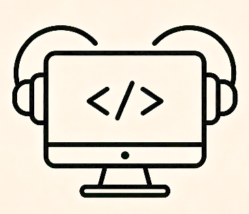

Claude Desk手机遥控 · 远程连接你的电脑
通过云中转服务连接自己的电脑：输入与电脑端「云连接」一致的 地址 和 token， 即可查看电脑上所有 claude 会话并远程对话。发送的消息会同步出现在电脑端终端里，回复也会自动传回。

Claude Desk通过云中转服务连接自己的电脑：输入与电脑端「云连接」一致的 地址 和 token， 即可查看电脑上所有 claude 会话并远程对话。发送的消息会同步出现在电脑端终端里，回复也会自动传回。